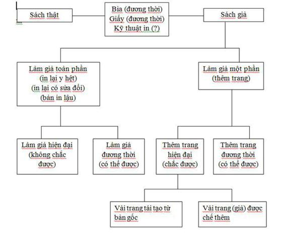
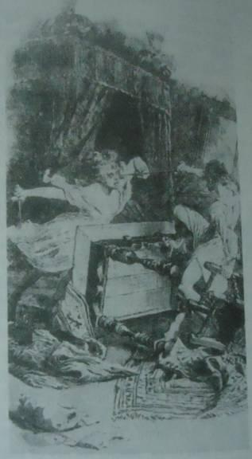

May mắn ư? Xin lỗi vì tôi bật cười, có Chúa biết.
Lời giải thích đó chỉ đủ làm hài lòng một thằng khờ.
M. Zevaco, LOS PARDELLANES.
ANH EM CENIZA
ĐÓNG VÀ PHỤC CHẾ SÁCH
Bảng hiệu bằng gỗ nứt toác, bạc phếch vì thời gian và nấm mốc treo trên cửa sổ đầy bụi. Xưởng của anh em nhà Ceniza ở gác lửng của một tòa nhà cũ bốn tầng có cột đỡ phía sau, nằm trên một đường phố râm mát trong khu phố cũ của Madrid.
Lucas Corso nhấn chuông hai lần nhưng không ai trả lời. Gã xem đồng hồ, rồi tựa lưng vào tường đứng đợi. Gã biết thói quen của Pedro và Pablo Ceniza. Vào giờ này họ còn ở cách đây mấy dãy phố, đứng trước quầy hàng La Taurina bằng đá cẩm thạch, nốc cạn nửa lít rượu vang dành cho bữa sáng, tán dóc về sách và môn đấu bò. Hai gã độc thân cục cằn nghiện rượu này không rời nhau được.
Mười phút sau họ sánh vai nhau cùng tới, bộ quần áo bảo hộ lao động xám xịt lật phật như tấm vải liệm trùm lên thân mình gầy trơ xương. Cả đời lom khom trên cái máy in và cỗ máy dập nổi, còng lưng ngồi khâu sách và mạ vàng những tấm da, hai anh em dù chưa tới năm mươi tuổi nhưng trông như gần sáu chục. Công việc tay chân cực nhọc khiến cặp má họ hóp vào, bàn tay và đôi mắt héo mòn, làn da phai màu, như thể cái chất lạnh và nhợt nhạt của những tấm da dùng trong công việc đã ngấm hết sang họ. Hai người trông cực kỳ giống nhau, mũi to tướng, hai tai dán sát vào xương sọ, mái tóc thưa thớt chải lật ra sau. Điểm khác biệt duy nhất giữa họ là Pablo, trẻ hơn người anh hai tuổi, cao hơn và kiệm lời hơn so với Pedro, người thường bị những con ho sù sụ hành hạ vì hút quá nhiều thuốc lá, bàn tay run rẩy châm hết điếu thuốc nọ tới điếu kia.
“Lâu lắm mới gặp, ông Corso. Vẫn khỏe chứ?”
Hai người dẫn gã theo cái cầu thang ọp ẹp tới một cánh cửa mở ra kêu kẽo kẹt, bật đèn chiếu sáng cái xưởng bề bộn của họ. Một cỗ máy in cổ lỗ chình ình giữa nhà. Bên cạnh là một cái bàn bọc kẽm chất đầy dụng cụ, từng đống gáy sách khâu dở hay đã xong, những tấm da nhuộm màu, những lọ keo dán, những bản phác thảo hình dập trang trí và vài thứ đồ dùng khác. Khắp nơi là sách: từng đống sách lớn có bìa bọc da Marốc, bọc vải thô tuyết dày hay da dê, những gói sách đã xong hoặc sắp xong chờ gửi đi, những cuốn sách chưa đóng bìa cứng hay sách bìa mềm. Những tập sách bị mọt cắn hay nấm mốc làm hỏng nằm trên ghế băng và các kệ sách chờ phục chế. Căn phòng bốc lên mùi giấy, mùi keo dán và da mới. Corso hít cái mùi đó vào ngực đầy hứng thú. Rồi gã moi cuốn sách từ trong túi ra đặt lên bàn.
“Tôi muốn xin ý kiến các ông về cuốn này.”
Đây không phải là lần đầu tiên. Thong thả, thậm chí còn thận trọng, Pedro và Pablo Ceniza nhích lại gần. Như thường lệ, vẫn là người anh mở lời. “Chín cánh cửa.” Hắn khẽ chạm vào cuốn sách. Những ngón tay xương xẩu ám khói thuốc tựa như đang mơn trớn làn da còn sống. “Đẹp quá. Một cuốn sách cực kỳ có giá.”
Mắt hắn màu xám, như mắt chuột. Áo quần bảo hộ màu xám, tóc xám, mắt xám, tất cả đều giống như họ của hắn, Ceniza nghĩa là “tro tàn”. Hắn nhìn cuốn sách với vẻ thèm khát.
“Trước đây ông từng thấy nó chưa?”
“Rồi. Gần một năm trước, khi Claymore muốn chúng tôi làm sạch hai chục cuốn sách mang từ thư viện của ngài Gualterio Terral tới.”
“Khi đó tình trạng của nó thế nào?”
“Tuyệt hảo. Ngài Terral biết phải chăm sóc những cuốn sách như thế nào. Hầu hết chúng còn tốt khi đưa tới đây, trừ một cuốn của Teixeira chúng tôi phải động chân động tay. Số còn lại, bao gồm cả cuốn này chỉ cần làm vệ sinh đôi chút.”
“Cuốn này là đồ ngụy tạo,” Corso nói toạc ra. “Hoặc là người ta bảo tôi thế.”
Hai anh em nhìn nhau.
“Đồ ngụy tạo…,” người anh lẩm bẩm. “Người ta nói về những cuốn sách ngụy tạo sao mà dễ dãi quá.”
“Quá ư dễ dãi,” người em đế thêm.
“Kể cả ông, thưa ông Corso. Và điều đó thật đáng ngạc nhiên. Không đáng để làm giả một cuốn sách, quá nhiều nỗ lực mới mang lại chút lợi ích. Tôi muốn nói đến ngụy tạo cao cấp chứ không phải một bản facscimile dành cho tụi gà mờ.”
Corso phác một cử chỉ tựa như muốn nói: xin hãy khoan dung. “Tôi không nói cả quyển sách là ngụy tạo mà chỉ nói một phần của nó. Có thể có những trang sách lấy từ những bản hoàn chỉnh được cố tình đưa vào những cuốn thiếu một hay vài trang.”
“Tất nhiên, đó là một mánh buôn bán. Nhưng thêm một bản sao chép hay một bản facsimile đâu có giống việc hoàn thành cả cuốn sách với những trang căn cứ vào…” Hắn hơi xoay sang người em nhưng vẫn nhìn Corso. “Nói cho ông ấy biết đi, Pablo.”
“Căn cứ vào những quy tắc nghề nghiệp của bọn tôi,” gã Ceniza trẻ bổ sung.
Corso nhìn họ một cái như mời họ cùng đồng lõa một vụ gì. Một con thỏ chịu chia sẻ nửa củ cà rốt. “Đó có thể là trường hợp của cuốn này,” gã nói.
“Ai nói vậy?”
“Chủ nhân cuốn sách. Nhân tiện mà nói, ông ta không phải gà mờ.”
Pedro Ceniza nhún đôi vai hẹp và mồi một điếu thuốc mới bằng điếu đã hút hết. Khi hắn kéo hơi đầu tiên, một trận ho khan khiến người hắn rung bần bật, nhưng hắn cứ hút, thản nhiên như không.
“Ông có cách tiếp cận với một bản in thật để so sánh chúng với nhau chứ?”
“Không, nhưng sẽ sớm có. Vì vậy trước tiên tôi muốn biết ý kiến của các ông.”
“Đây là một cuốn sách quý, và ý kiến của chúng tôi không mang tính chính xác khoa học.” Hắn lại quay sang người em, “Phải thế không, Pablo?”
“Đó là một nghệ thuật,” em hắn khẳng định.
“Phải. Chúng tôi không định làm ông thất vọng, thưa ông Corso.”
“Tôi chắc vậy. Các ông biết mình đang nói gì. Xét cho cùng thì các ông có khả năng ngụy tạo Speculum Vitae[1] từ một bản duy nhất hiện hữu và khiến nó được liệt vào danh sách bản gốc ở một trong những catalô danh giá nhất châu Âu.”
Cùng một lúc, cả hai cười hằn học. Đúng như Si và Am[2], Corso thầm nghĩ, cặp mèo quỷ sứ thực sự đã bị chạm nọc.
“Chẳng bao giờ chứng minh được đấy là do chúng tôi làm,” cuối cùng Pedro Ceniza nói. Hắn xoa tay, liếc nhìn cuốn sách.
“Phải, chẳng bao giờ,” người em ủ rũ lặp lại. Tựa như bọn họ ân hận vì đã không bị tống vào tù để đền đáp sự thừa nhận của công chúng.
“Đúng,” Corso công nhận. “Cũng chẳng có chứng cớ gì về cuốn The Chaucer, vẫn được cho là do Marius Michel làm, nằm trong catalô bộ sưu tập Manouk. Hay là bản Thánh kinh đa ngữ của Nam tước Bielke với ba trang bị thiếu được ông thay vào hoàn hảo đến mức hiện giờ các chuyên gia không hề nghi ngờ tính chân thực của nó…”
Pedro Ceniza giơ bàn tay vàng vọt có móng dài nghêu lên. “Xin có đôi lời về chuyện này, thưa ông Corso. Ngụy tạo để kiếm lời là một chuyện, ngụy tạo vì lòng say mê nghệ thuật là chuyện khác, tạo ra thứ gì đấy hầu được hưởng niềm thỏa mãn trong chính hành vi sáng tạo ấy, hoặc như trong hầu hết mọi trường hợp, trong chính hành vi tái tạo ấy.” Lão hấp háy mắt cười ma mãnh. Cặp mắt chuột bé tí lóe sáng khi quay lại với Chín cánh cửa. “Mặc dù tôi không nhớ có khi nào đụng chân đụng tay vào những tác phẩm tuyệt vời ông vừa miêu tả hay không, và tôi bảo đảm em tôi cũng không.”
“Tôi đánh giá chúng hoàn hảo.”
“Thế ư? Vậy thì đừng bận tâm nữa.” Hắn đưa điếu thuốc lên miệng, hóp má lại rít một hơi dài. “Nhưng bất kể là ai hoặc những ai chịu trách nhiệm, ông có thể chắc rằng người ấy hay những người ấy đều xuất phát từ niềm say mê lớn, một cấp độ thỏa mãn cá nhân không thể mua được bằng tiền…”
“Sine pecunia. Vô giá,” người em đế thêm.
Pedro Ceniza phì khói thuốc từ hai lỗ mũi và cái miệng hé mở. Hắn tiếp, “Lấy ví dụ Speculum, Sorbonne mua nó vì tin là đồ thật. Chất giấy, sắp chữ, kỹ thuật in, đóng sách, ngần ấy khâu thôi là đủ để buộc những người mà ông gọi là kẻ làm đồ giả phải trả giá gấp năm lần số tiền họ có thể kiếm được. Chỉ là người ta không hiểu… Cái gì sẽ làm thỏa mãn một họa sĩ có tài năng như Velázquez và kỹ năng bắt chước tác phẩm của ông ta: được tiền, hay được thấy một trong những bức họa của mình treo ở Prado giữa hai tác phẩm Las Meninas và Vulcan’s Forge?”
Corso tán thành. Trong vòng tám năm, Speculum của anh em Ceniza là cuốn sách giá trị nhất mà Đại học Paris có trong tay. Nó được phát hiện là đồ giả không phải do một chuyên gia mà do sự hớ hênh tình cờ của người trung gian.
“Cảnh sát có còn quấy rầy các ông không?”
“Rất hiếm. Ông phải nhớ là vụ việc trường Sorbonne xảy ra ở Pháp giữa người mua và người môi giới. Đúng là tên tuổi chúng tôi có liên quan, nhưng chẳng chứng minh được gì.” Pedro Ceniza lại cười xảo trá, như lấy làm tiếc là không có bằng chứng gì. “Chúng tôi quan hệ tốt với cảnh sát. Thậm chí có lúc họ còn tới gặp chúng tôi khi cần xác minh một cuốn sách ăn cắp.” Hắn vung vẩy điếu thuốc lá về phía người em. “Chẳng ai bằng Pablo khi cần xóa đi dấu thư viện, bóc nhãn sở hữu và thủ tiêu dấu vết về lai lịch sách. Nhưng đôi khi người ta cần hắn làm công việc theo quy trình ngược. Ông biết thế nào rồi: mình sống thì cũng nên để người khác sống.”
“Ông nghĩ gì về Chín cánh cửa?”
Ceniza anh nhìn Ceniza em, rồi nhìn cuốn sách. Hắn lắc đầu. “Chẳng có gì đáng chú ý khi chúng tôi làm việc với nó. Giấy và mực không sai. Mấy thứ đó chỉ thoạt nhìn là thấy.”
“Chúng tôi để ý thấy thế,” người em chữa lại.
“Bây giờ ý kiến ông thế nào?”
Pedro Ceniza rít nốt hơi cuối cùng từ điếu thuốc chỉ còn lại một mẩu ngắn tí trong tay rồi vứt xuống sàn giữa hai chân, mẩu thuốc cứ vậy cháy đến hết. Lớp sơn trên sàn đầy những vết cháy sém do thuốc lá.
“Kiểu đóng sách ở Venice thế kỷ mười bảy, tình trạng tốt…” Cả hai anh em cùng cúi xuống cuốn sách, nhưng chỉ người anh đưa bàn tay lạnh lẽo xanh xao đụng vào cuốn sách. Bọn họ giống như hai người thợ làm thú nhồi đang tính xem cách nào tốt nhất để lèn bông vào cái xác. “Loại da Marốc đen, với những phù hiệu hoa hồng bằng vàng.”
“Có phần hơi quá trang trọng so với hàng Venice,” Pablo thêm vào.
Anh hắn thể hiện sự đồng ý bằng một cơn ho.
“Họa sĩ đã vẽ rất chừng mực. Chắc chắn là do chủ đề…” Hắn nhìn Corso, “Ông đã thử kiểm tra bìa sách chưa? Những cuốn sách thế kỷ mười sáu và mười bảy bìa da đôi khi chứa đựng những điều bất ngờ. Tấm bìa sách bên trong làm từ những tờ rời được ép rồi dán lại với nhau. Đôi khi người ta dùng những bản in thử của cùng cuốn sách đó, hoặc của lần xuất bản trươc. Một số bìa sách tìm được bây giờ lại có giá trị hơn cả những văn bản bên trong cuốn sách.” Hắn trỏ vào những tờ giấy trên bàn. “Kia là một ví dụ. Nói cho ông ấy biết đi, Pablo.”
“Sắc lệnh của Giáo hoàng về cuộc Thập tự chinh Thần thánh, năm 1483.” Người anh cười mập mờ. Giống như hắn đang nói về chuyện tình dục hơn là về đống giấy cổ xưa. “Được dùng để đóng bìa cho những cuốn hồi ký vô giá.”
Pedro Ceniza kiểm tra Chín cánh cửa. “Bìa sách không vấn đề gì,” hắn nói. “Mọi thứ đều khớp. Một cuốn sách kỳ quặc, đúng không? Năm dải băng đắp nổi trên gáy sách, không có nhan đề, và cả cái biểu tượng quái dị này nữa. Torchia, Venice 1666. Chắc ông ta tự đóng lấy. Một món đồ tuyệt đẹp.”
“Còn chất giấy thì sao?”
“Thật là chẳng hổ danh ông, thưa ông Corso. Câu hỏi hay đấy.” Người thợ đóng sách liếm liếm môi như muốn làm nó ấm lên. Hắn búng búng các trang sách và cẩn thận lắng nghe thanh âm phát ra, hệt như Corso đã làm ở chỗ Varo Borja. “Giấy hảo hạng. Không hề giống như thứ giấy xenlulô hiện thời. Ông có biết tuổi thọ trung bình của một cuốn sách in hiện nay là bao nhiêu không? Nói đi, Pablo.”
“Sáu mươi năm,” người em đau khổ nói, như thể đó là lỗi của Corso. “Khốn nạn, vẻn vẹn có sáu mươi năm.”
Pedro lục lọi đống dụng cụ trên mặt bàn. Sau cùng hắn tìm thấy một cái kính lúp có độ phóng đại cực lớn, liền soi lên trên cuốn sách.
“Một thế kỷ nữa,” hắn lẩm bẩm trong lúc giở một trang sách lên soi dưới ánh đèn để xem xét, một mắt nheo lại, “hầu hết sách vở trong các thư viện hiện nay sẽ biến mất. Nhưng những cuốn sách này, in cách đây hai trăm, thậm chí năm trăm năm thì sẽ vẫn còn nguyên. Chúng ta có sách, và có cái thế giới mà chúng ta xứng đáng có… Phải vậy không, Pablo?”
“Sách tồi in trên giấy tồi.”
Pedro Ceniza gật đầu đồng ý. Lúc này hắn đang kiểm tra kỹ cuốn sách qua kính lúp. “Đúng thế. Giấy xenlulô sẽ ngả vàng và giòn như bánh quy xốp, những chỗ hư hại không cách gì sửa chữa. Chúng già đi và chết.”
“Sách này thì không,” Corso trỏ cuốn sách mà nói.
Người thợ đóng sách giơ trang giấy về phía ánh sáng.
“Giấy làm từ giẻ rách, hẳn là thế. Giấy tốt, làm bằng tay, từ giẻ rách, chịu được cả thời gian lẫn sự ngu xuẩn của con người… Không, không phải. Đây là vải lanh. Giấy làm bằng vải lanh thực thụ.” Hắn đặt kính lúp xuống và nhìn người em. “Lạ làm sao, đây không phải là giấy Venice. Nó dày, xốp, có xơ. Có thể là hàng Tây Ban Nha không?”
“Hàng Valencia,” em hắn đáp. “Jativa, Valencia, Tây Ban Nha.”
“Đúng. Tốt nhất châu Âu thời đó. Nhà in chắc đã nhập khẩu được một chuyến… Anh ta đã làm đâu ra đấy.”
“Anh ta rất chu đáo,” Corso nói, “và đã phải trả giá cả mạng sống.”
“Rủi ro nghề nghiệp.” Pedro nhận điếu thuốc nhàu nát từ tay Corso, châm luôn rồi ho sù sụ. “Như chính ông biết, lừa gạt người về giấy là khó. Ram giấy được sử dụng phải còn trắng nguyên, phải cùng một thời kỳ, mà cho dù như thế vẫn có thể có những khác biệt: những trang sách biến màu nâu, mực in phai màu và thay đổi theo thời gian… Tất nhiên có thể tạo vết ố bẩn hay làm sẫm màu hơn bằng cách rửa nước trà những trang đưa thêm vào. Mỗi lần phục chế hay bổ sung trang bị mất đều phải làm cho cuốn sách thật là trọn vẹn. Những chi tiết rất vụn vặt ấy mới là đáng kể. Có phải không, Pablo? Bao giờ cũng là những tiểu tiết đáng nguyền rủa ấy.”
“Các ông suy đoán thế nào?”
“Tạm thời chúng tôi xác nhận rằng bìa sách là từ thế kỷ mười bảy. Điều đó không có nghĩa là các trang bên trong khớp đúng với bìa này chứ chẳng phải bìa khác. Nhưng cho rằng như thế đi. Còn về giấy, có vẻ rất giống với những mẻ giấy khác có lai lịch đã được xác nhận.”
“Đúng. Bìa và giấy là thật. Ta sẽ xem xét đến văn tự và tranh minh họa.”
“Bây giờ thì phức tạp hơn. Ta có thể tiếp cận hình thức bản in từ hai góc độ khác nhau. Một là ta có thể giả định rằng cuốn sách là thật. Tuy vậy chủ nhân của nó lại phủ nhận, và theo ông thì ông ta có cách để biết. Vì vậy tính nguyên gốc là có thể nhưng không chắc lắm. Ta hãy giả định đây là đồ giả và xem xét mọi khả năng. Thứ nhất, toàn bộ văn bản có thể là giả, văn bản giả được in trên giấy thời ấy và đóng bìa với chất liệu thời ấy. Điều này khó xảy ra. Hoặc nói chính xác hơn là không mấy thuyết phục. Giá của một cuốn sách như vậy rất khủng khiếp… Một khả năng khác, và điều này là hợp lý, cuốn sách ngụy tạo có thể được làm không lâu sau khi cuốn sách được xuất bản lần đầu tiên. Ý tôi là nó được in lại có vài sửa đổi, được hóa trang cho giống với bản in lần đầu, chừng một hai chục năm sau cái năm 1666 ghi trên đầu sách này. Nhưng để làm gì?”
“Đây là một cuốn sách cấm,” Pablo Ceniza nói.
“Có thể,” Corso đồng ý. “Ai đó đã có được trong tay thiết bị - khuôn in và chữ in – mà Aristide Torchia đã sử dụng và đã có thể in sách thêm lần nữa.”
Người anh nhặt một cây bút chì rồi nguệch ngoạc mấy nét lên sau một tờ giấy in. “Có thể đó là một cách giải thích,” hắn nói. “Nhưng có cách khác hợp lý hơn. Chẳng hạn, hãy tưởng tượng rằng cả cuốn sách là đồ thật nhưng thiếu vài trang, bị xé hoặc bị mất, và ai đó đã thay chúng bằng những trang sách dùng giấy thời ấy, kết hợp với kỹ thuật in hoàn hảo và lòng kiên nhẫn vô biên. Khi đó có hai khả năng: một là những trang thêm vào là bản mô phỏng từ ấn bản hoàn chỉnh, hai là nếu không có bản gốc để mô phỏng hay sao chép thì nội dung của chúng được phịa ra.” Người thợ đóng sách chìa cho Corso thứ hắn ta đang viết. “Quá trình tạo ra một cuốn sách giả được mô tả trong biểu đồ này.”
Trong khi Corso và Pablo xem tờ giấy, Pedro lại lật nhanh cuốn Chín cánh cửa.
“Tôi thiên về ý nghĩ,” hắn thêm vào sau một thoáng, khi hai người kia tập trung chú ý vào hắn, “rằng nếu có mấy trang bị ghép thêm vào, nó phải được hoàn thành hoặc trong thời kỳ in ấn bản thứ nhất hoặc hiện nay, trong thời đại chúng ta. Khoảng thời gian giữa có thể bỏ qua, vì chỉ mãi rất gần đây người ta mới biết cách làm được bản sao hoàn hảo như vậy cho một cuốn sách cổ.”

Corso trả lại tờ biểu đồ và hỏi, “Giả sử ông gặp một cuốn sách bị mất mấy trang. Và ông muốn hoàn thiện nó với kỹ thuật mới. Ông sẽ thực hiện thế nào?”
Anh em Ceniza đồng loạt thở dài như đang thưởng thức một viễn cảnh đầy hấp dẫn nghề nghiệp. Hai người bây giờ cùng dán mắt vào cuốn Chín cánh cửa.
“Ta giả sử rằng,” Pedro nói, “cuốn sách một trăm sáu mươi tám trang này mất đi trang một trăm. Trang một trăm và trang chín mươi chín, vì mỗi tờ có hai mặt. Và ta muốn thay thế nó. Bí quyết là đưa vào một cặp song sinh.”
“Một cặp song sinh?”
“Trong nghề này người ta gọi thế,” Pablo đáp, “một bản sao hoàn chỉnh khác.”
“Hoặc ít nhất là một bản khác mà ở đó hai trang ta cần nhân đôi còn nguyên. Cũng cần so sánh cặp song sinh với bản in không hoàn chỉnh của ta để xem độ hằn sâu của chữ in có ở mức độ khác nhau không hoặc các con chữ có bị mờ đi khác nhau không. Như ông biết, chữ in thời ấy là chữ rời và dễ dàng bị mòn đi hay bị hỏng. Vì vậy với cách in thủ công, bản in đầu và cuối của cùng một đợt in có thể khác nhau nhiều. Có thể có những chữ cái biến dạng hay đứt nét, lượng mực đọng ít hay nhiều hơn, kiểu vậy. Kiểm tra kỹ những chỗ biến đổi đó thì ta mới có thể thêm hay bớt những chi tiết không hoàn chỉnh trên trang sách thêm vào để trang này khớp với phần còn lại của cuốn sách. Khi đó ta sẽ bắt tay vào việc mô phỏng và chế ra được một tấm khuôn quang khắc. Rồi từ đó làm bản in kẽm hay polymer.”
“Một loại khuôn in nổi,” Corso nói, “làm từ kim loại hay chất dẻo.”
“Chính xác. Dù kỹ thuật mô phỏng hoàn hảo đến đâu, ta cũng chẳng bao giờ làm nổi những độ lồi lõm, những dấu vết trên giấy đặc trưng cho phương pháp in ngày xưa dùng bản in khắc gỗ hay kim loại. Vì vậy toàn trang phải được sao lại bằng vật liệu cho phép tạo khuôn, tức là chất dẻo hay kim loại. Khuôn in như vậy cho hiệu quả rất giống phương pháp in bằng khuôn chì tháo lắp thường dùng năm 1666. Ta đặt khuôn in vào máy rồi in trang đó bằng tay, giống như người ta làm cách đây bốn thế kỷ… tất nhiên phải dùng loại giấy thời ấy, hoặc loại được xử lý cả trước lẫn sau bằng biện pháp già hóa nhân tạo. Thành phần cấu tạo của mực in phải nghiên cứu thật kỹ. Trang sách được xử lý bằng hóa chất sao cho nó khớp với những trang khác. Và thế là hành vi phạm tội đã xong.”
“Nhưng nếu trang sách gốc không còn nữa. Nếu không có bản mẫu của hai trang thất lạc để sao chép…”
Anh em nhà Ceniza cùng cười tự tin.
“Thế thì,” Pedro nói, “công việc còn thú vị hơn.”
“Nghiên cứu và sáng tạo,” Pablo thêm vào.
“Và liều lĩnh, tất nhiên, ông Corso. Giả sử Pablo và tôi có bản Chín cánh cửa bị thiếu trang. Một trăm sáu mươi sáu trang kia cung cấp cho ta một danh sách đầy đủ các chữ cái và biểu tượng nhà in đã sử dụng. Ta sẽ lấy mẫu để có một bảng chữ cái hoàn chỉnh. Rồi tái tạo bảng chữ cái trên giấy ảnh để mang đi mang lại dễ hơn, rồi nhân bản mỗi chữ cái theo số lần chúng xuất hiện trên trang đó. Một nghệ sĩ bằng tài hoa và cảm hứng có thể tái tạo những chữ in bằng khuôn chì đúc, giống như thợ in ngày xưa thường làm. Đáng tiếc là việc này quá phức tạp và tốn kém. Vậy ta sẽ dùng kỹ thuật in hiện đại. Ta sẽ dùng một lưỡi dao cạo tách các chữ cái thành từng chữ in rời, và Pablo, chắc tay hơn, sẽ lên khuôn cho hai trang này theo từng dòng liên tiếp, đúng như thợ sắp chữ thế kỷ mười bảy đã làm. Từ đấy ta tạo được một bản in thử trên giấy, loại bỏ những chỗ giao nhau hay những chỗ không hoàn chỉnh trên các chữ cái hoặc thêm vào những lỗi tương tự như trên các chữ cái trong bản gốc. khi đó chỉ còn việc tạo âm bản. Từ âm bản ông sẽ có phiên bản nổi và có khuôn in.”
“Chuyện gì xảy ra nếu trang bị mất là tranh minh họa?”
“Không có gì khác cả. Tất nhiên nếu có cơ hội tiếp xúc với tranh khắc gốc, kỹ thuật tạo bản in sẽ đơn giản hơn. Trong trường hợp này, các nét trong tranh dùng khuôn gỗ đều nhạt màu hơn so với khuôn đồng hay khắc bằng kim không dùng axit, điều này có nghĩa là ta có thể tạo được một sản phẩm gần như hoàn hảo.”
“Giả sử tranh gốc không còn nữa?”
“Cũng không vấn đề gì. Nếu có cái để tham khảo, ta sẽ bắt chước. Nếu không thì có thể sáng tác. Đương nhiên là sau khi đã nghiên cứu kỹ thuật dùng cho những bức họa khác trong sách. Bất cứ một thợ thủ công lành nghề nào cũng làm được.”
“Còn chuyện in thì sao?”
“Như ông biết, tranh khắc gỗ là bản in khắc nổi. Khối gỗ được cắt dọc thớ rồi phủ lên một lớp nền trắng. Bức tranh được vẽ lên trên đó. Rồi người ta khoét gỗ đi và bôi mực lên những phần chóp nhọn hay những gờ nổi để mực có thể chuyển sang giấy. Khi tái tạo bản khắc gỗ có hai lựa chọn. Một là mô phỏng lại tranh vẽ, tốt nhất là bằng chất dẻo. Hai là nếu có một thợ khắc giỏi thì hãy làm một khuôn khắc gỗ thật với kỹ thuật mà người xưa đã dùng rồi in trực tiếp từ nó. Nếu là tôi thì vì em tôi là thợ khắc giỏi, tôi sẽ in thủ công bằng khuôn gỗ. Ở bất cứ nơi nào có khả năng nghệ thuật phải noi theo nghệ thuật.”
“Kết quả sẽ tốt hơn,” Pablo nói thêm.
Corso nhìn hắn một cách bí ẩn.
“Giống như với Speculum của trường Sorbonne?”
“Có lẽ. Người làm giả hay những người làm giả tác phẩm đó có thể cũng nghĩ như chúng tôi… Phải không, Pablo?”
“Hẳn họ là những người mơ mộng,” em hắn tán thành với nụ cười yếu ớt.
“Phải, hẳn thế,” Corso trỏ cuốn sách. “Vậy thì, kết luận của các ông là thế nào?”
“Tôi nghĩ đây là bản gốc,” Pedro Ceniza không ngần ngừ trả lời. “Ngay cả bọn tôi cũng không thể làm hoàn hảo được như vậy. Coi này, chất giấy, những chỗ biến màu trên giấy, sắc thái giống và khác nhau của mực in, và dạng thức chữ in… Có thể có mấy trang giả được thêm vào, nhưng tôi nghĩ rất ít khả năng. Nếu đây là đồ ngụy tạo, cách giải thích duy nhất là nó được hoàn thành trong khoảng thời kỳ đó. Người ta tìm được mấy bản? Ba ư? Tôi cho rằng ông đã nghĩ đến khả năng cả ba cuốn đều được ngụy tạo.”
“Phải. Những tranh khắc gỗ thế nào?”
“Hiển nhiên là rất lạ. Những biểu tượng ấy… Nhưng nhất định chúng thuộc về thời ấy. Các vết hằn của khuôn in như nhau. Mực in, màu nền giấy… Có lẽ mấu chốt không phải là chúng được in khi nào và ở đâu mà là ở nội dung. Rất tiếc vì chúng tôi đã không làm công việc tiến triển được bao nhiêu.”
“Ông nhầm rồi.” Corso chuẩn bị gấp sách lại. “Ta đã làm được rất nhiều.”
Pedro Ceniza ngắt lời gã. “Còn một việc nữa… Tôi chắc chính ông cũng để ý thấy. Đó là những dấu ấn của người thợ in.”
Corso nhìn hắn bối rối, “Tôi không rõ ông định nói gì.”
“Chữ ký nhỏ xíu ở bên dưới mỗi bức họa. Chỉ cho ông ấy đi, Pablo.”
Người em trai chùi tay vào áo khoác như muốn lau sạch mồ hồi. Rồi nhích lại gần Chín cánh cửa, hắn dùng kính lúp soi lên mấy trang và chỉ cho Corso.
“Mỗi tranh khắc,” hắn giải thích, “đều có những chữ viết tắt thông dụng: Inv. nghĩa là invenit, chữ ký của họa sĩ vẽ bản gốc, và Sculp. là sculpsit, thợ khắc… xem đi. Trong bảy bức tranh, chữ viết tắt A. TORCH ở bên cạnh cả sculp. lẫn inv. rõ ràng là nhà in này tự vẽ và khắc bảy bức. Nhưng trong hai bức còn lại, ông ta chỉ ký tên bên sculp. Nghĩa là hai bức này ông ta chỉ làm bản khắc. Ai đó khác mới là người vẽ tranh gốc, ai đó khác mới là inv. Một người có tên viết tắt là L.F.”
Pedro Ceniza gật đầu đồng ý với lời giải thích của người em và châm một điếu thuốc. “Không tệ chứ?” Hắn lại bắt đầu ho trong khói thuốc. Hắn quan sát phản ứng của Corso, một tia ranh mãnh lóe lên trong đôi mắt chuột. “Gã thợ in đó hẳn là người bị nướng trên giàn thiêu, nhưng hắn chẳng phải là người duy nhất bị liên lụy.”
“Đúng,” em hắn tán thành, “ai đó đã giúp châm lửa dưới chân hắn.”
©STENT: http://www.luv-ebook.com
CÙNG NGÀY HÔM ẤY, Liana Taillefer tới thăm Corso. Ả đến không báo trước, vào lúc trời chiều chạng vạng, khi Corso mặc cái áo sơ mi vải bông bạc màu và cái quần nhung kẻ đứng bên cửa sổ hướng Tây, ngắm hoàng hôn nhuộm các mái nhà thành phố thành màu đỏ và màu hoàng thổ. Có lẽ lúc đó không phải giờ lành; có lẽ nhiều chuyện xảy ra sau này có thể tránh được nếu ả xuất hiện ở một thời điểm khác trong ngày. Chẳng ai biết được. Chỉ biết rằng Corso đang nhìn ra ngoài cửa sổ, ly rượu gin vừa cạn khiến sương mờ dâng đầy hai mắt gã. Chuông cửa reo, và Liana Taillefer – tóc vàng, cao lớn, đầy gợi cảm, khoác áo mưa kiểu Anh, váy áo may đo và bít tất dài đen – xuất hiện trên bậu cửa. Mái tóc cuộn thành búi nhỏ dưới cái mũ rộng vành màu thuốc lá duyên dáng lệch về một bên. Chiếc mũ rất hợp người. Ả đẹp. Ả biết mình đẹp và chờ đợi tất cả mọi người nhận ra điều đó.
“Làm sao tôi có được vinh hạnh tiếp đón bà vậy?” Corso hỏi. Đó là một câu hỏi ngốc nghếch, nhưng vào giờ đó và với ngần ấy rượu gin, gã chẳng thể tìm đâu lời lẽ hay ho hơn. Liana Taillefer đã kịp tiến vào phòng. Ả đứng trước cái bàn trên đó có tệp tài liệu và bản thảo Dumas nằm cạnh máy tính cùng hộp đĩa mềm.
“Ông vẫn làm về cái này ư?”
“Tất nhiên.”
Ả rời mắt khỏi Rượu vang Anjou, điềm nhiên nhìn những cuốn sách xếp đầy trên tường và quanh nhà. Corso biết ả muốn tìm những bức ảnh, những kỷ vật, những thứ tiêu biểu cho tính cách của chủ nhân. Ả nhíu mày cao ngạo, bực tức chẳng tìm thấy gì. Sau cùng ả bắt gặp thanh kiếm của người cận vệ già.
“Ông sưu tầm gươm?”
Đó là một kết luận lôgic. Mang tính quy nạp. Ít nhất, Corso tự an ủi, năng lực của Liana Taillefer dùng để thoát khỏi tình trạng lúng túng là không tương xứng với vẻ ngoài của ả. Trừ khi ả muốn khiêu khích. Gã mỉm cười cảnh giác, cảm thấy mình đang bị dồn đến chân tường.
“Cái đó tôi lượm được. Và đó là một thanh kiếm.”
Ả gật đầu, nét mặt vô cảm. Khó mà nói ả là người đơn giản hay là một kịch sĩ tài năng.
“Vật gia truyền?”
“Tìm được,” Corso nói dối. “Treo nó trên tường trông hay hơn. Chỉ toàn sách trông nhạt nhẽo lắm.”
“Sao không có tranh ảnh gì?”
“Không có ai khiến tôi đặc biệt muốn tưởng nhớ.” Gã nghĩ tới bức ảnh viền khung bạc, ngài Taillefer quá cố mặc tạp dề đang lạng thịt con lợn sữa. “Với bà đương nhiên là khác.”
Ả chăm chú nhìn gã, có lẽ đang cố xác định mức độ láo xược trong lời bình luận của gã. Đôi mắt xanh lấp loáng ánh thép lạnh khiến người ta rùng mình. Ả sải bước trong phòng, thỉnh thoảng ngừng lại coi mấy cuốn sách, ngắm quang cảnh ngoài cửa sổ, rồi quay lại bên cái bàn. Ả di móng tay sơn màu đỏ máu trên tấm bìa bọc ngoài bản thảo Dumas. Có vẻ ả đang đợi Corso nói gì đó, nhưng gã vẫn im lặng. Gã kiên nhẫn chờ. Nếu ả đang theo đuổi thứ gì đó – và rõ là thế - thì cứ để ả làm tất. Chẳng cần gì tạo thuận lợi cho ả.
“Tôi ngồi được chứ?”
Giọng nói hơi khàn. Dư âm một đêm nặng nề, Corso nghĩ. Gã đứng giữa phòng, tay đút túi, chờ đợi. Liana Taillefer bỏ mũ và áo mưa ra. Ả nhìn quanh với vẻ buồn chán vô cùng tận rồi chọn một chiếc sofa cũ. Ả bước qua đó, thong thả ngồi xuống, cái váy co lên. Hai chân bắt chéo, hình tượng ả tạo ra lúc này sẽ khiến cho bất kỳ ai, kể cả Corso (nếu bớt đi một nửa lượng rượu gin) đều thấy bủn rủn cả người.
“Tôi tới có công chuyện.”
Rất thẳng thắn. Hẳn ả nhằm vào thứ gì đó khi tỏ thái độ như vậy. Corso cũng nhiều tự trọng như bất kỳ ai, nhưng gã không ngu.
“Tốt,” gã nói. “Bà đi ăn tối với Flavio La Ponte chưa?”
Không có phản ứng gì. Ả vẫn tiếp tục nhìn gã trong vài giây, thản nhiên, phớt đời chẳng kém.
“Chưa,” sau cùng ả đáp, chẳng hề giận dữ. “Trước tiên tôi muốn gặp ông đã.”
“Ô, tôi đây.”
Liana Taillefer ngửa thêm một chút ra sau. Một tay ả đặt lên chỗ rách ở cái sofa da cũ kỹ, nơi có túm lông đuôi ngựa nhồi thò ra.
“Ông làm việc vì tiền,” ả nói.
“Đúng.”
“Ông bán mình cho người trả giá cao nhất.”
“Đôi khi.” Corso nhếch mép. Đây là lãnh địa của gã, vì vậy gã có thể dành chỗ cho biểu hiện con thỏ thân thiện của mình. “Thường thì tôi đem bản thân cho thuê. Giống như Humphrey Bogart trong phim. Hay như một con điếm.”
Dù là một bà góa từng phải may vá thêu thùa suốt tuổi học trò, Liana Taillefer cũng không có vẻ bị choáng với cách ăn nói của gã.
“Tôi muốn đề nghị ông một công việc.”
“Quá tốt. Kỳ này người ta cũng đang muốn thuê tôi.”
“Tôi sẽ trả ông hậu hĩnh.”
“Tuyệt. Người ta cũng trả tôi giá cao.”
Ả giật một túm lông đuôi ngựa thò ra từ tay ghế sofa rồi lơ đãng xoắn nó quanh ngón trỏ.
“Ông tính bao nhiêu với ông bạn La Ponte của mình?”
“Flavio ư? Chẳng tính đồng nào. Chẳng ai lấy nổi một xu của hắn.”
“Thế thì vì sao ông làm cho anh ta?”
“Như chính bà nói, hắn là bạn tôi.”
“Bạn,” ả trầm ngâm nhắc lại. “Thật lạ khi nghe ông nói cái từ đó,” ả nói. Một nụ cười khẽ, khinh miệt. “Ông cũng có cả bạn gái nữa chứ?”
Corso thong thả ngắm hai chân ả từ dưới lên trên. Không chút ngượng ngùng.
“Tôi có kỷ niệm với vài cô. Kỷ niệm với bà đêm nay có lẽ sẽ không tệ.”
Ả thản nhiên tiếp nhận câu trả lời láo xược. Có lẽ ả không hiểu, Corso tự nhủ.
“Ra giá đi,” ả lạnh lùng nói. “Tôi muốn bản thảo của chồng tôi.”
Mọi chuyện có vẻ tốt. Corso bước tới ngồi lên tay vịn sofa đối mặt với Liana Taillefer. Ở đó gã thấy rõ hơn. Ả đã tháo giày ra và đặt chân trần trên thảm.
“Lần trước hình như bà không quan tâm đến thế.”
“Tôi nghĩ lại rồi. Bản thảo đó có…”
“Giá trị về mặt tình cảm?” Corso giễu cợt.
“Gì đó đại loại thế.” Giọng điệu lúc này có vẻ thách thức. “Nhưng không như ông nghĩ.”
“Bà định làm gì để có được nó?”
“Tôi nói rồi. Trả giá cho ông.”
Corso liếc nhìn ả, ánh mắt dâm đãng. “Bà xúc phạm tôi đây. Tôi là một người chuyên nghiệp.”
“Ông là lính đánh thuê chuyên nghiệp, thưa ông Corso. Và lính đánh thuê có thể thay đổi trận tuyến. Ông biết là tôi cũng đọc nhiều sách rồi.”
“Tôi có đủ tiền cần thiết rồi.”
“Tôi không nói về tiền.”
Ả ngửa người trên sofa rồi dùng một bàn chân ve vuốt mu bàn chân kia. Corso tưởng tượng những móng chân sơn đỏ bên trong đôi tất đen. Cái váy co lên theo cử động của ả, một vệt da trắng nuột nà tháp thoáng bên trên nịt tất màu đen, nơi đó mọi bí ẩn quy về một bí ẩn duy nhất, xưa cũ như bản thân thời gian. Corso khó nhọc bắt mình ngước lên. Đôi mắt xanh lạnh lẽo vẫn đang nhìn gã.
Gã tháo kính ra trước khi nhổm dậy bước tới bên sofa. Liana Taillefer bình thản nhìn gã, ngay cả khi gã ở ngay cạnh ả, gần đến mức đầu gối hai người chạm nhau. Rồi ả đưa tay đặt những ngón tay móng đỏ lên ngay chỗ khóa kéo cái quần nhung kẻ gã mặc. Ả mỉm cười khinh bỉ và đắc thắng khi Corso cúi mình lật ngược chiếc váy lên trên.
CHUYỆN ĐÓ DIỄN RA giống như một trận ẩu đả hơn là một lần chia sẻ. Một vụ thanh toán hận thù ngay trên ghế sofa. Một cuộc vận lộn thô bạo không khoan nhượng giữa người lớn với người lớn, những tiếng rên rỉ thích hợp tùy lúc, đôi câu thầm thì nguyền rủa, móng tay người đàn bà tàn nhẫn cắm sâu vào lưng Corso. Và nó xảy ra không chút trì hoãn, chẳng chờ gỡ bỏ áo váy. Cái váy trùm lên bộ hông to khỏe bị gã kẹp chặt trong khi những đinh tán trên vòng nịt tất của ả nghiến lên háng gã. Gã thậm chí còn chưa thấy ngực ả, mặc dù gã đã xoay xở đụng chạm được đôi lần cái da thịt săn chắc, ấm áp, đầy đặn bên dưới mấy lần áo khoác, sơ mi lụa và cái xu chiêng. Trong cơn cuồng hoan, Liana chẳng có thì giờ cởi bỏ chúng. Và giờ họ nằm đó, cả hai, quấn quýt vào nhau giữa đống áo quần nhàu nát, thở không ra hơi như hai đô vật kiệt sức. Corso tự hỏi làm cách nào để thoát khỏi tư thế này đây.
“Rochefort là ai?” gã hỏi.
Ả nhìn gã từ khoảng cách đôi phân. Ánh nắng chiều tà màu đỏ nhạt lấp loáng trên mặt ả. Mấy cái kẹp tóc rơi đâu mất để mái tóc vàng xõa xượi trên mặt sofa da. Lần đầu tiên ả có vẻ thư giãn.
“Chuyện đó không quan trọng,” ả trả lời, “vấn đề là bây giờ tôi sẽ lấy lại tập bản thảo.”
Corso áp môi lên khe ngực của người đàn bà như muốn nói lời từ giã với nó. Gã có cảm tưởng tương lai chẳng còn dịp nào hôn lên đó nữa.
“Bản thảo nào?” gã hỏi và thấy ngay lập tức vẻ mặt sững sờ của ả. Thân hình ả nằm bên dưới đột nhiên trở nên cứng đờ.
“Rượu vang Anjou.” Lần đầu tiên giọng ả thoáng vẻ lo lắng. “Ông sẽ trả nó cho tôi, đúng thế không, thưa ông Corso?”
Corso để ý thấy ả quay trở lại với lối nói trang trọng. Gã thoáng nhớ lại những xưng hô thân mật trong cuộc mây mưa vừa rồi.
“Tôi chưa bao giờ nói vậy.”
“Tôi tưởng…”
“Bà tưởng lầm.”
Đôi mắt xanh màu thép lóe lên giận dữ. Ả điên cuồng bật dậy, lắc hông hất gã ra một cách thô bạo.
“Đồ khốn nạn!”
Sắp sửa buông lời chế nhạo và phá lên cười, Corso chợt thấy thân mình bị hất ngược ra sau. Hai đầu gối gã khuỵu xuống. Khi đã gượng đứng lên được và siết chặt dây lưng, gã thấy Liana Taillefer đứng thẳng người, áo quần xộc xệch, nét mặt lạnh lùng tái nhợt và hung tợn, cặp đùi tuyệt mỹ phô ra. Ả giáng một cái tát mạnh đến mức tai trái gã kêu u u như cái trống.
“Đồ lợn!”
Corso ngất ngư sau cú đánh. Choáng váng, gã giống như một võ sĩ quyền Anh quờ quạng tìm thứ gì đó có thể ngăn gã ngã lên vòng dây thừng bao quanh võ đài. Liana Taillefer vẫn trong tầm mắt, nhưng cảm giác đau đớn cùng cực nơi tai khiến gã khó lòng chú tâm vào ả. Ngẩn ngơ dán mắt vào thanh kiếm từng tham dự chiến dịch Waterloo, gã chợt nghe tiếng thủy tinh vỡ. Gã lại thấy Liana Taillefer trong bóng chiều đỏ nhạt rọi qua cửa sổ. Váy đã kéo xuống. Một tay ả cầm tập bản thảo, tay kia nắm chặt cái cổ chai vỡ chĩa thẳng vào cổ gã.
Gã giơ cánh tay lên theo bản năng và lùi lại. Nguy hiểm khiến ý thức quay lại với gã và khiến chất adrenaline tuôn ra. Gã gạt tay ả qua một bên rồi đấm vào cổ ả. Ả nghẹn thở khựng lại. Màn tiếp theo êm dịu hơn một chút. Corso nhặt tập bản thảo và cổ chai vỡ trên bàn. Liana Taillefer một lần nữa lại ngồi trên sofa, mái tóc rối bời xòa ngang mặt. Một tay ả vẫn giữ trên cổ, thở hổn hển giữa những tiếng nấc điên cuồng.
“Ông sẽ chết vì thứ này, Corso,” rốt cuộc ả lên tiếng. Mặt trời đã lặn xuống bên kia thành phố, các góc trong phòng bị bóng tối chiếm hữu. Gã ngượng ngùng bật công tắc đèn, trao mũ và áo khoác cho ả trước khi gọi taxi. Gã tránh không nhìn vào mắt ả. Rồi, khi nghe tiếng bước chân ả xa dần dưới cầu thang, gã đứng bên cửa sổ ngắm nhìn những mái nhà tối sẫm trong ánh trăng mới mọc rạng rỡ.
“Ông sẽ chết vì thứ này, Corso.”
Gã rót cho mình một cốc lớn rượu gin. Gã không sao quên nổi biểu hiện của Liana Taillefer, khi nhận ra mình bị lừa. Đôi mắt tàn độc như dao găm, cái miệng há ra khát khao trả thù. Và ả đã nói rõ, thực sự ả muốn gã chết. Một lần nữa ký ức lại bị khuấy lên, dần dà choáng hết đầu óc gã. Nhưng lần này gã không cần gắng sức nhớ lại. Hình ảnh rõ nét, và gã biết chính xác nó từ đâu tới. Bản facsimile Ba người lính ngự lâm ở ngay trên bàn. Gã mở ra tìm phân đoạn này. Trang 129. Ở đó, giữa đám đồ đạc đổ lổng chổng, Milady từ trên giường nhảy vọt lên, như một con quỷ cái phát rồ cầm dao găm nhảy bổ vào d’Artagnan. Chàng trai, mình vẫn mặc sơ mi, hoảng hồn lùi lại, dùng đầu mũi kiếm ngăn không cho ả xông tới.

… dùng đầu mũi kiếm ngăn không cho ả xông tới.
-----------------------
[1] Speculum Vitae (Tấm gương cuộc đời): bài thơ viết bằng tiếng Anh cổ sáng tác trong khoảng giữa hoặc cuối thế kỷ 14
[2] Si và Am: Cặp mèo Xiêm song sinh, nhân vật phản diện trong Lady and Tramp, phim hoạt hình của Walt Disney (1955).